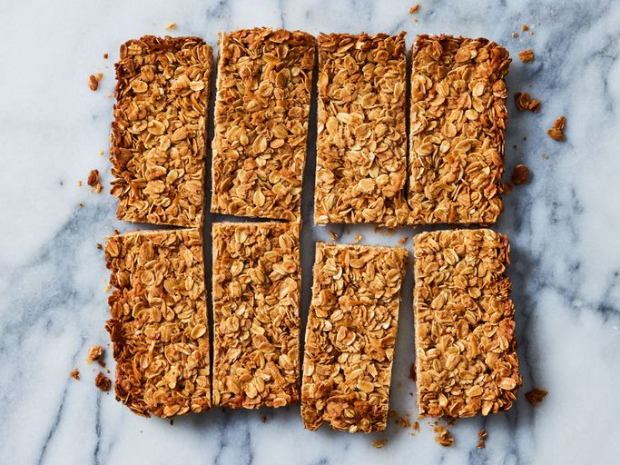

This granola bar recipe is super easy to make with oats, coconut, and peanut butter for a wholesome snack any time of the day!
Skip the store-bought stuff and make granola bars at home! This homemade granola bar recipe is quick, wholesome, and budget-friendly. Plus, it's easy to tweak the ingredients based on what you have on hand.